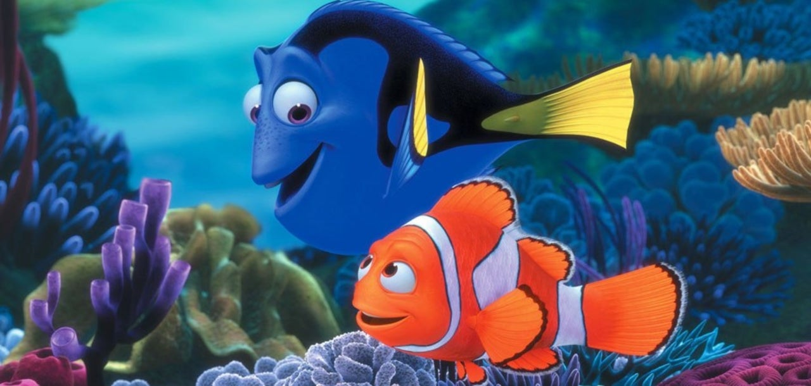
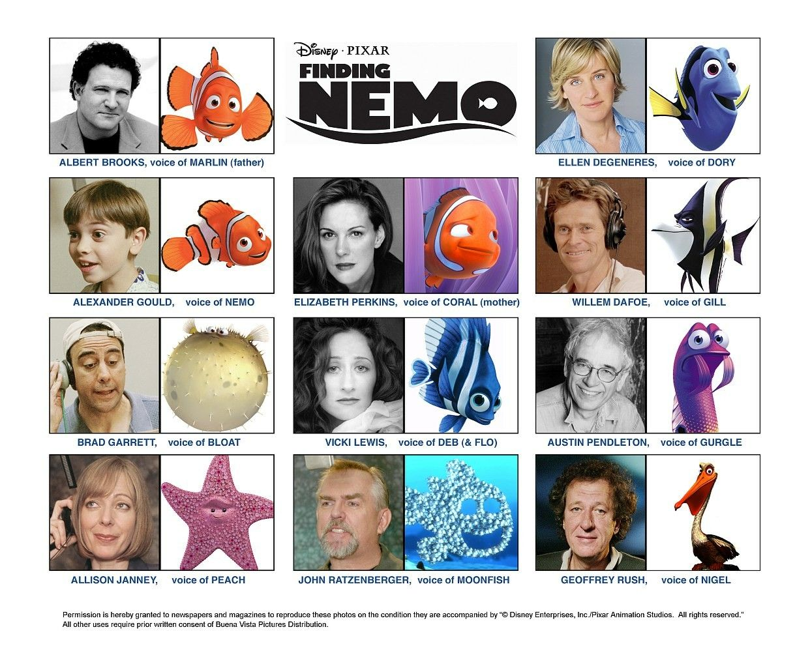

FINDING NEMO

Finding Nemo is a 2003 American computer-animated adventure film produced by Pixar Animation Studios and released by Walt Disney Pictures. Directed and co-written by Andrew Stanton with co-direction by Lee Unkrich, the screenplay was written by Bob Peterson, David Reynolds, and Stanton from a story by Stanton. The film stars the voices of Albert Brooks, Ellen DeGeneres, Alexander Gould, and Willem Dafoe. It tells the story of an overprotective clownfish named Marlin, who, along with a regal blue tang named Dory searches for his missing son Nemo. Along the way, Marlin learns to take risks and comes to terms with Nemo taking care of himself. Released on May 30, 2003, Finding Nemo won the Academy Award for Best Animated Feature, the first Pixar film to do so. It was also nominated in three more categories, including Best Original Screenplay. Additionally, it became the highest-grossing animated film at the time of its release, and was the second-highest-grossing film of 2003, earning a total of $871 million worldwide by the end of its initial theatrical run.[2] Finding Nemo is the best-selling DVD title of all time, with over 40 million copies sold as of 2006,[3] and was the highest-grossing G-rated film of all time before Pixar's own Toy Story 3 overtook it. The film was re-released in 3D in 2012. In 2008, the American Film Institute named it as the 10th greatest animated film ever made as part of their 10 Top 10 lists.[4] In a 2016 poll of international critics conducted by BBC, Finding Nemo was voted one of the 100 greatest motion pictures since 2000.
| Title of Movie | The Actors | Age Restrictions | Show Times | QR code for Booking & payments |
|---|---|---|---|---|
| Findind Nemo | Albert Brooks,Ellen DeGeneres,Alexander Gould,Willem Dafoe | All Ages Welcome | 10:00 to 13:00 & 14:00 to 17:00 Daily |  |